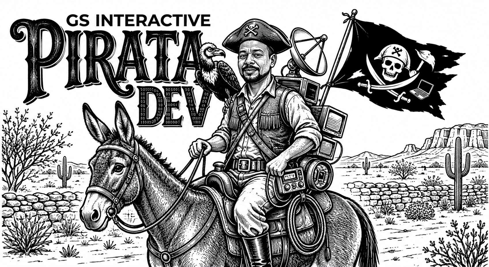

Germano Santos
Desenvolvedor Front-End em formação | HTML, CSS e JavaScript | Construindo interfaces modernas, funcionais e responsivas, criando experiências digitais que unem criatividade, performance e usabilidade.
> Sobre
Sou Germano, estudante de ADS e criador da GS Interactive. Gosto de transformar ideias em sites, e de aprender a fazer cada coisa do começo ao fim.
"Carrego a inventividade do sertão, a liberdade pirata e a lógica do código para criar soluções enxutas e cheias de identidade. Estou em busca de estágio e novos projetos para aprender, contribuir e crescer junto."
